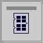
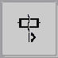

Для использования функции «Удаленное управление планшетом» перейдите в форму «Подготовка к работе > Управление памятью». Сначала выберите устройство «MetaDimension» (или имя устройства, установленное в конфигурации) в «Выберите устройство хранения данных».
Нажмите «ОК», чтобы вернуться к форме со списком заданий. на определенный период времени (максимум). 10 сек.) система попытается передать данные между CP2000 и Prinect Shooter. В этот период панель состояния отображает вращающуюся руку часов.
Если данные переданы правильно, задания будут видны в списке заданий.
Колонки, которые могут быть показаны, перечислены в таблице ниже. Некоторые столбцы могут быть выбраны в конфигурации, как описано ранее.
|
Идентификатор заказа в Prinect Shooter или JobID от MIS (MIS: только при подключении к диспетчеру интеграции Prinect) |
Каждая строка в списке заданий показывает определенные атрибуты работы. Задание четко определена в первой колонке JobID.
Если «MemoryPlus» лицензирован, вы можете выбрать кнопки над колонками для сортировки, а также использовать общую функциональность фильтра.
Для каждого выбранного заказа из первого листа показывается миниатюра (предварительный просмотр) передней и задней стороны.
Функциональность кнопок выглядит следующим образом:
Предпочтение (повышение приоритета): В версии 41 CP2000 эта кнопка устанавливает приоритет «А» (срочный) для выбранной работы.
В CP2000 версии 42 и выше эта кнопка повышает приоритет выбранной работы на один уровень.
Кнопка ниже устанавливает приоритет выбранной работы на один уровень. Эта кнопка доступна только в версии 42 CP2000.
Повторное изображение: Список разделений отображается в новой форме для выбранной работы, где вы можете выбрать разделение, которое необходимо переоформить.

Продолжайте: Выбранный порядок, находящийся в «приостановленном» статусе, будет продолжен.

Различные кнопки настроены на «Включено» в соответствии со статусом работы. Назначение выглядит следующим образом:
«Приоритет повышения/изменения» и «Продолжение» применяются непосредственно к выбранной работе. После того, как действие будет сделано, список заданий покажет изменение приоритета или статуса работы.
С другой стороны, нажмите «Re-image», чтобы вызвать данные разделения цветов для выбранной работы от Prinect Shooter. Эти данные показаны в новой форме «Управление памятью / разделение цвета изображения».
Номер заказа и название заказа отображаются в заголовке формы «Управление памятью / разделение цвета на изображения».
Различные колонки перечислены в следующей таблице.
Если «MemoryPlus» лицензирован, вы можете выбрать кнопки над колонками для сортировки, а также использовать общую функциональность фильтра.
Каждая строка определяет определенную печатную пластину, которая может быть повторно отображена на основе трех атрибутов: «Имя листа», «Помощь» и «Разделение».
Миниатюры (предварительные изображения) передней и задней стороны ассоциированного листа показаны для каждой выбранной линии или разделения.
Вы можете выбрать строку и нажать «ОК», чтобы отправить повторное изображение этого разделения в Prinect Shooter. После этого форма закрывается, как с кнопкой «Отменить», и запрашивается и отображается обновленная версия списка заданий Prinect Shooter.
Задание с повторным изображением («детская задание») появляется в списке заданий с названием оригинальной работы («родительская задание») и «родительской» JobID в качестве префикса. В Prinect Shooter новая задание автоматически назначается «срочным» в качестве ее приоритета и «по оперативным причинам» в качестве ее бухгалтерского атрибута. "По оперативным причинам" означает, что перепечатка была выполнена по оперативным причинам, например, из-за повреждения изображенной пластины.
«Основной порядок»: JobID = «1», имя = «Журнал 1»
«Sub order»: JobID = «4», Name = «[1] Journal 1»
В соответствующее время Prinect Shooter разрешает только родительскую работу или повторную визуализацию (детскую работу). Одновременная обработка родительской и детской работы не допускается. Многократное переосмысление родительской работы также невозможно. Поскольку детские задания имеют одно и то же имя в списке заданий, это означает, что только одна задание из многих заданий с одним и тем же именем может быть выполнена в данный момент времени.
Copyright © 2013 Heidelberger Druckmaschinen AG